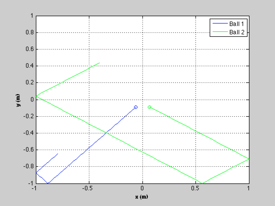
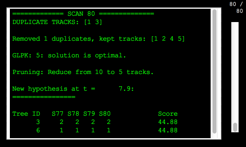
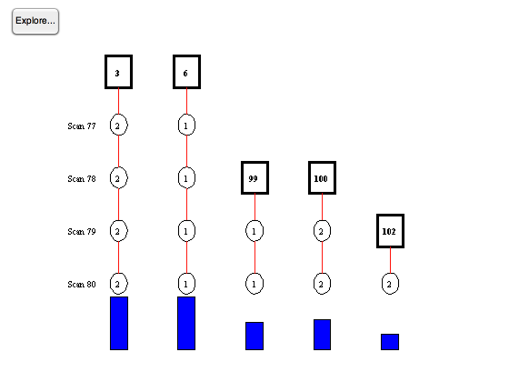
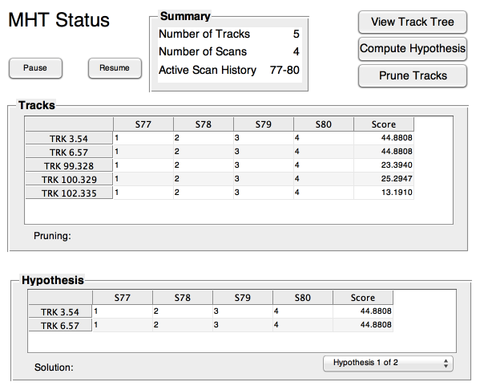
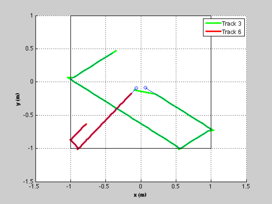

MHT billiard demo.
This models billiard balls that can bounce of the walls of an enclosure. The model is two double integrators but because of the bounce there is considerable model uncertainty in position and velocity. The sensor outputs the x and y position of each ball with noise. See also KFBilliardsDemo which demonstrates the filter by itself.
The state vector is [x;vX;y;vY].
The demo uses the Kalman Filter (KF).
------------------------------------------------------------------------- See also BilliardCollision, RHSBilliards, ScanToTrackBilliards -------------------------------------------------------------------------
Contents
-------------------------------------------------------------------------
% Copyright (c) 2013 Princeton Satellite Systems, Inc. % All rights reserved. % -------------------------------------------------------------------------
Initialize
-----------
% Control screen output %---------------------- printHypotheses = 1; printTrackUpdates = 0; makePlots = 1; % Set the seed for the random number generators. % If the seed is not set each run will be different. %--------------------------------------------------- seed = 45198; rng(seed); % The number of balls and the random initial position and velocity %----------------------------------------------------------------- d.nBalls = 2; sigP = 0.4; sigV = 1; sigMeas = 0.00000001; % Enclosure limits %----------------- d.xLim = [-1 1]; d.yLim = [-1 1]; % Time step setup %---------------- dT = 0.1; tEnd = 8; % Set the initial state %---------------------- x = zeros(4*d.nBalls,1); rN = rand(4*d.nBalls,1); for k = 1:d.nBalls j = 4*k-3; x(j ,1) = sigP*(rN(j ) - 0.5); x(j+1,1) = sigV*(rN(j+1) - 0.5); x(j+2,1) = sigP*(rN(j+2) - 0.5); x(j+3,1) = sigV*(rN(j+3) - 0.5); end % For initializing the Kalman Filter %----------------------------------- x0 = x; % Set the number of time steps %----------------------------- n = ceil(tEnd/dT); % Plotting %--------- xP = zeros(length(x),n);
Simulate
---------
fprintf(1,'\nRunning the simulation...'); % Sensor measurements %-------------------- nM = 2*d.nBalls; y = zeros(nM,n); iY = zeros(nM,1); for k = 1:d.nBalls j = 2*k-1; iY(j ) = 4*k-3; iY(j+1) = 4*k-1; end for k = 1:n % Collisions %----------- x = BilliardCollision( x, d ); % Plotting %--------- xP(:,k) = x; % Integrate %---------- x = RK4(@RHSBilliards, x, dT, 0, d ); % Measurements %------------- y(:,k) = x(iY) + sigMeas*randn(nM,1); end fprintf(1,'DONE.\n'); % Plot the simulation results %---------------------------- hB = NewFig( 'Billiard Balls' ); c = 'bgrcmyk'; kX = 1; kY = 3; s = cell(1,d.nBalls); l = []; for k = 1:d.nBalls plot(xP(kX,1),xP(kY,1),['o',c(k)]) hold on l(k) = plot(xP(kX,:),xP(kY,:),c(k)); kX = kX + 4; kY = kY + 4; s{k} = sprintf('Ball %d',k); end XLabelS('x (m)'); YLabelS('y (m)'); set(gca,'ylim',d.yLim,'xlim',d.xLim); legend(l,s) grid
Running the simulation...DONE.
Implement MHT
--------------
% Covariances %------------ r0 = sigMeas^2*[1;1]; % Measurement covariance q0 = [1;60;1;60]; % The baseline plant covariance diagonal p0 = [0.1;1;0.1;1]; % Initial state covariance matrix diagonal % Plant model %------------ a = [1 dT;0 1]; b = [dT^2/2;dT]; zA = zeros(2,2); zB = zeros(2,1); % Create the Kalman Filter data structures %----------------------------------------- for k = 1:d.nBalls kf(k) = KFInitialize( 'kf', 'm', x0(4*k-3:4*k), 'x', x0(4*k-3:4*k),... 'a', [a zA;zA a], 'b', [b zB;zB b],'u',[0;0],... 'h', [1 0 0 0;0 0 1 0], 'p', diag(p0), ... 'q', diag(q0),'r', diag(r0) ); end % Create the track data data structure %------------------------------------- mhtData = MHTInitialize('probability false alarm', 0.001,... 'probability of signal if target present', 0.999,... 'probability of signal if target absent', 0.001,... 'probability of detection', 1, ... 'measurement volume', 1.0, ... 'number of scans', 3, ... 'gate', 0.2,... 'm best', 2,... 'number of tracks', 1,... 'scan to track function',@ScanToTrackBilliards,... 'scan to track data',struct('r',diag(r0),'p',diag(p0)),... 'distance function',@MHTDistance,... 'hypothesis scan last', 0,... 'filter data',kf(1),... 'prune tracks', 1,... 'remove duplicate tracks across all trees',1,... 'average score history weight',0.01,... 'filter type','kf'); % Create the tracks %------------------ clear trk for k = 1:d.nBalls trk(k) = MHTInitializeTrk( kf(k) ); end % Size arrays %------------ b = MHTTrkToB( trk ); TOMHTTreeAnimation( 'initialize', trk ); TOMHTTreeAnimation( 'update', trk ); % Initialize MHT GUI %------------------- MHTGUI; MLog('init') MLog('name','Billiards Demo') t = 0; for k = 1:n if( printTrackUpdates ) fprintf(1,'\nScan %d\n\n',k); for j = 1:length(trk) fprintf(1,'%d: Track %d meas %d\n',j, trk(j).iD, trk(j).meas); end pause end % Get the measurements - zScan.data %---------------------------------- z = reshape( y(:,k), 2, d.nBalls ); zScan = AddScan( z(:,1) ); for j = 2:size(z,2) zScan = AddScan( z(:,j),[],[],[],zScan); end % Manage the tracks and generate hypotheses %------------------------------------------ [b, trk, sol, hyp, mhtData] = MHTTrackMgmt( b, trk, zScan, mhtData, k, t ); % Display the hypothesis %----------------------- if (printHypotheses) MHTHypothesisDisplay( hyp, trk, k, t ); end % Update MHTGUI display %---------------------- MHTGUI(trk,sol,'hide'); % Animate the tree %----------------- if( ~isempty(zScan) && makePlots ) TOMHTTreeAnimation( 'update', trk ); end t = t + dT; end % Show the GUI %------------- MHTGUI;  
Plot the hypothesized trajectories against the simulation
----------------------------------------------------------
NewFig( 'Hypotheses' ); hold on kX = 1; kY = 3; s = cell(1,d.nBalls); h = []; c = 'grcmygrcmy'; kk = 0; for j = 1:length(hyp.trackIndex) kk = hyp.trackIndex(j); l(j) = plot(trk(kk).mHist(1,:),trk(kk).mHist(3,:),[c(j) '-'],... 'linewidth',2); h{j} = sprintf('Track %d',trk(kk).treeID); end for k = 1:d.nBalls % Plot the simulated data in blue plot(xP(kX,1),xP(kY,1),['o']) plot(xP(kX,:),xP(kY,:)); kX = kX + 4; kY = kY + 4; end plot(d.xLim,[1;1]*d.yLim,'k'); plot([1;1]*d.xLim,d.yLim,'k') XLabelS('x (m)'); YLabelS('y (m)'); %set(gca,'ylim',d.yLim,'xlim',d.xLim); legend(l,h) grid %-------------------------------------- % PSS internal file version information %--------------------------------------